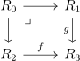
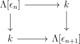
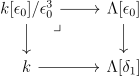
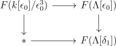
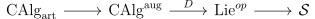

Date: 9/22/2021.
The purpose of deformation theory is to study the local behaviour of moduli problems. In a moduli problem, one studies smoothly varying families of some kind of geometric object. We focus here on moduli problems over a field \(k\) of characteristic zero.
As a very simple example, one can consider the moduli problem of one dimensional vector spaces with n labelled points, not all of which are zero. A family of such objects over a variety \(X\) is the same as giving a line bundle on \(X\) with \(n\) sections that don’t simultaneously vanish. The moduli problem associated to this is the functor \(F:\CAlg ^{\heart } \to \Set \), where \(\CAlg ^{\heart }\) is the category of (discrete) commutative \(k\)-algebras, and the functor takes \(R\) to the set of line bundles with n non simultaneously vanishing sections. This moduli problem has an associated moduli space, namely \(\PP ^{n-1}\). This means that the functor \(F\) is represented by \(\PP ^{n-1}\), i.e \(F\) is naturally isomorphic to \(\Hom (\Spec (R) ,\PP ^{n-1})\).
In general, we think of a moduli problem as being represented by some kind of geometric object, such as a stack. For example, we can consider the moduli problem of families of elliptic curves. It is a bad idea to encode this moduli problem as a \(\Set \)-valued functor, because elliptic curves have automorphisms. Instead, we make our functor at least valued in \(\Gpd \), the category of groupoids, which in particular allows us to recover the isomorphism classes of elliptic curves as \(\pi _0\). The groupoid valued functor is much better behaved: for example it satisfied descent and is represented by a Deligne-Mumford stack. We might as well have our moduli problems be valued in \(\cS \), the category of spaces, since this is the category of \(\infty \)-groupoids, and in particular contains \(\Gpd \) and \(\Set \) fully faithfully in it.
To motivate how we will study the local behaviour of moduli problems, consider a \(k\)-variety \(X\), with functor of points \(X: \CAlg ^{\heart } \to \cS \), and let \(p \in X(k)\). We can form the completion of \(X\) at \(p\), i.e the functor \(X^{\wedge }_p :\CAlg ^{\heart } \to \cS \), whose value on \(R\) is the subset of maps \(\Spec (R) \to X\) such that the image on the Zariski spectra is contained in \(\{p\}\). This functor sees all of the local behaviour of \(X\) near \(p\). Any map in \(X^{\wedge }_p(R)\) is given by a map of rings \(\cO _{X,p} \to R\) that sends the maximal ideal \(m\) to nilpotent elements1. Since \(m\) is finitely generated, this means that some large power \(m^n\) is sent to zero. Thus the map factors through \(\cO _{X,p}/m^n\) for \(n\gg 0\), which is an Artinian local ring that is finite dimensional with residue field \(k\). Thus we see in particular that the functor \(X^{\wedge }_p\) is actuallly determined by its restriction to the subcategory \(\CAlg ^{\heart }_{\art }\) of Artinian local finite dimensional rings with residue field \(k\).
To give an example of what kind of results are proven in deformation theory, we can consider the moduli problem of deformations of \(X\), some smooth proper variety over \(k\). This functor \(F:\CAlg ^{\heart }_{\art } \to \cS \) sends \(R\) to the groupoid of lifts of \(X\) to a smooth proper \(R\)-scheme2. Some facts about this functor are:
In other words, isomorphism classes of first order deformations of \(X\) correspond to \(H^1(X;T_X)\), automorphisms of first order deformations correspond to \(H^0(X;T_X)\), and the obstructionn to lifting a first order deformationn of \(X\) to a second order deformation of \(X\) lies in \(H^2(X;T_X)\).
These facts, especially \((3)\), can be explained via spectral algebraic geometry. To do so we need to extend the functor \(F\) to the subcategory \(\CAlg _{art}\) of \(\CAlg \) consisting of connective, bounded above commutative \(k\)-algebras with \(\pi _i\) finite dimensional over \(k\), \(\pi _0\) local Artinian with residue field \(k\).
Our functor \(F: \CAlg _{\art } \to \cS \) now sends \(R\) to the space of smooth proper spectral schemes over \(R\) lifting \(X\). \(F\) now satisfies the following properties:

with \(f\) and \(g\) surjective on \(\pi _0\).
Via the pullback squares

where \(\Lambda [\ee _n]\) is the trivial square zero extension in degree \(n\), we learn that \(F(\Lambda [\ee _n]) = \Omega F(\Lambda [\ee _{n+1}])\). Thus \(F(\Lambda [\ee _n])\) fit togehter to form a spectrum \(T_F\) satisfying \(\Omega ^{\infty -n}T_F = F(\Lambda [\ee _{n+1}])\). \(T_F\) is the tangent complex of \(F\).
Now, \((1)-(3)\) are all exaplained by the fact that \(\pi _i T_F = H^{1-i}(X;T_X)\). Indeed this immediately explaines \((1)\) and \((2)\) given the definition of \(T_F\). For \((3)\), there is a pullback square

coming from the fact that \(k[\ee _0]/\ee _0^3\) is a square zero extension of \(\Lambda [\ee _0]\). Applying \(F\) gives the pullback square of spaces

So if we have a class in \(\pi _0F(\Lambda [\ee _0])\), we learn from the fibre square above that the obstruction to lifting it to \(F(k[\ee _0]/\ee _0^3)\) lies in \(\pi _0F(\Lambda [\delta _1]) = H^2(X;T_X)\), explaining \((3)\). Note to give this explanation we needed to use \(\Lambda [\delta _1]\), which is not discrete.
The notion of a formal moduli problem axiomitizes the properties of this example.
Definition 1.1. A formal moduli problem (or FMP) is a functor \(F:\CAlg _{\art } \to \cS \) satisfying \((F1)\) and \((F2)\) above.
Let \(\FMP \) be the category of formal moduli problems, and let \(\Lie \) be the category of Lie algebras over \(k\) (i.e dglas with quasi-isomorphisms inverted). The main result about formal moduli problems is is the following:
As currently stated, the equivalence is not explicit, but it can be made explicit in multiple ways, as will be explained. Roughly, we’d like to think of every formal moduli problem as being represented by some kind of pro-Artinian spectral stack, and the above result says that every such stack can be recovered from the tangent complex of its loop space, which is a Lie algebra.
More precisely, we can first observe as in the previous section, that given a formal moduli problem \(F\), \(F(\Lambda [\ee _n])\) fit together to form the tangent complex \(T_F\). In fact, \(\Sigma ^{-1}T_F\) can be given the structure of a Lie algebra, and is the one corresponding to \(F\). We might expect this, since the construction \(F \mapsto T_F\) commutes with limits, so \(\Sigma ^{-1}T_F = T_{\Omega F}\), and \(\Omega F\) is a group in the category \(\FMP \), so it’s tangent space \(\Sigma ^{-1}T_F\) ought to be a Lie algebra.
Furthermore, it isn’t hard to see that if \(F \to F'\) is a map of formal moduli problems inducing an equivalence on \(T_F\), then it is an equivalence. This is because every object in \(\CAlg _{\art }\) is built out of \(k\) from finitely many square zero extensions, which are classified by a pullback square for which we can apply \((F2)\). This way we can inductively show that \(F \to F'\) is an equivalence for every \(R \in \CAlg _{\art }\). Thus it makes sense that \(T_F\), along with all the extra structure it carries, retains all the information of \(F\).
One way to construct the functor \(\Lie \to \FMP \), which we suggestively call \(\mg \mapsto B\mg \), is to use Koszul duality.
We have a functor
\(C^*(-)\) has a left adjoint which we denote \(D:\CAlg ^{\aug } \to \Lie ^{op}\). This adjunction is fairly close to an equivalence: \(\Lie \) is equivalent via the bar construction (i.e Chevalley-Eilenberg chains) to coaugmented cocommutative coalgebras over \(k\), and \(D\) is the composite of this equivalence with the functor of taking \(k\)-linear duals.
Then given \(\mg \in \Lie \), the composite

gives the formal moduli problem \(B\mg \).
A more explicit way to describe the formal moduli problem is via Maurer-Cartan elements. Given a dgla \(\mg \), we can define \(\MC _0(\mg )\) to be the set of elements \(x\in \mg _{-1}\) satisfying the Maurer-Cartan equation3:
As a warning \(\MC _0(\mg )\) is not a homotopy invariant of \(\mg \)! But we can make a homotopy invariant version of it, as we now explain.
Given a dgla \(\mg \) and a (possibly nonunital) cdga \(R\), \(\mg \otimes R\) inherits the structure of a dgla by viewing it as \(\mg \) base changed to a Lie algebra over \(R\). In otherwords, the Lie bracket is given by \([x\otimes a,y\otimes b] = (-1)^{|ay|}[x,y]\otimes ab\).
Let \(\Omega ^*(\Delta ^n)\) be the polynomial de Rham complex of the \(n\)-simplex: i.e it is the free cdga generated by \(t_0,\dots ,t_n\) in degree \(0\) with the equation \(\sum _0^nt_i =1\). \(\Omega ^*(\Delta ^n)\) fit together as \(n\) varies to form a simplicial cdga. Then we can define a simplicial set \(\MC _*(\mg )\) as having \(n\)-simplicies given by \(\MC _0(\mg \otimes \Omega ^*(\Delta ^n)\). This is a homotopy invariant functor of \(\mg \).
Now we can say what the formal moduli problem associated to a dgla \(\mg \) is: it assigns an artinian local cdga \(R\) with maximal ideal \(m\) to the simplicial set \(\MC _*(\mg \otimes m)\).
Here we give an example of what Costello-Gwilliam call an elliptic formal moduli problem. This is a sheaf of formal moduli problems on a manifold such that the associated Lie algebra can be locally presented using a complex of elliptic operators. This example models the free scalar field theory.
Consider a Riemannian manifold \(M\), and consider the complex \(0 \to C^\infty ( M)\xrightarrow{\Delta }C^\infty (M)\), where \(0\) is in degree \(0\), and \(\Delta \) is the Laplacian. We make this a dgla by giving it trivial Lie bracket. We claim that this corresponds to the formal moduli problem classifying deformations of the function \(0\) as a harmonic function. To see this, we will explicitly describe and interpret \(\MC _0(\mg \otimes m)\) and \(\MC _1(\mg \otimes m)\) for \(m\) the maximal ideal of an Artinian local cdga \(R\).
Because the Lie bracket is trivial, \(\MC _0(g\otimes m)\) is the kernel of the differential in degree \(-1\), i.e the map
In otherwords, we have a function \(f \in C^*(M)\otimes R_0\) that vanishes modulo the maximal ideal (i.e a deformation of the zero function) and a homotopy \(g \in C^*(M)\otimes R_1\) satisfying \(\Delta f= d_Rg\) (i.e a witness to \(\Delta f\) being nulhomotopic).
Next, we consider \(\MC _1(g\otimes m)\). Here there are four pieces of data, which must satisfy three equations.
The second equation they satisfy is \(d_Rh_1 = \frac{df}{dt}dt\). In otherwords, the homology class of \(f\) remains constant as a function of \(t\), as witnessed by \(h_1\).
To understand the last equation, we first note that because \(\Delta ,\frac d{dt}dt, d_R\) all commute up to signs, the first two equations imply that \(d_R(\frac{dg}{dt}dt + \Delta h_1) = 0\). \(h_2\) is a witness of the fact that \(\frac{dg}{dt}dt + \Delta h_1\) is actually exact: the last equation is \(\frac{dg}{dt}dt + \Delta h_1 = d_Rh_2\).
In general, \(\MC _n(g\otimes m)\) consists of higher homotopies and higher coherence data of deformations.
1Indeed, this is equivalent to the image being contained in \(p\) since \(m\) consists of functions that vanish at \(p\), and the nilpotent elements are those that vanish on all of \(R\), so the condition says that if a function vanishes at \(p\), its pullback to \(\Spec (R)\) vanishes everywhere.
2The lift is equipped with an isomorphism of its reduction to \(k\) with \(X\).
3The name Mauer-Cartan element is related to the fact that on a Lie group, there is a canonically defined Maurer-Cartan form, which is a 1-form with values in the Lie algebra, and satisfies the Maurer-Cartan equation. In other words, the Maurer-Cartan form is a Maurer-Cartan element of the de Rham complex with coefficients in the Lie algebra.